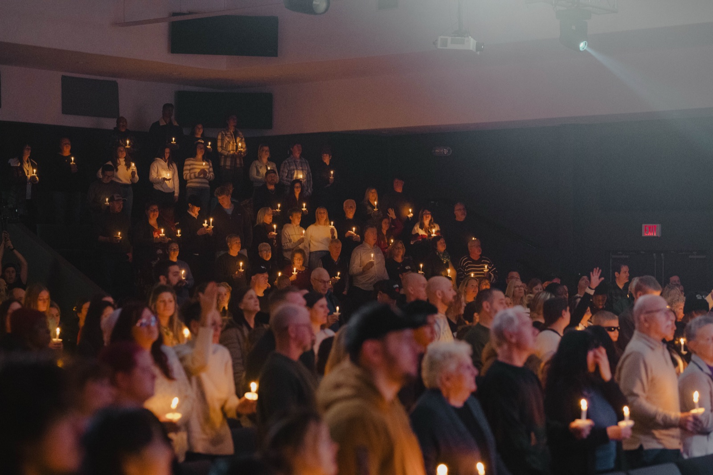
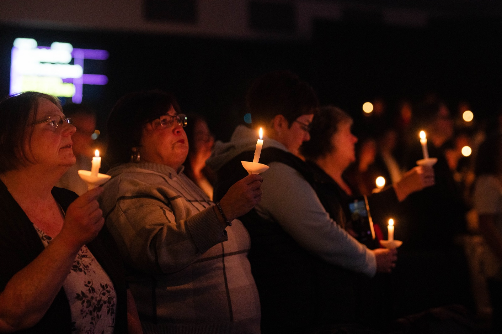
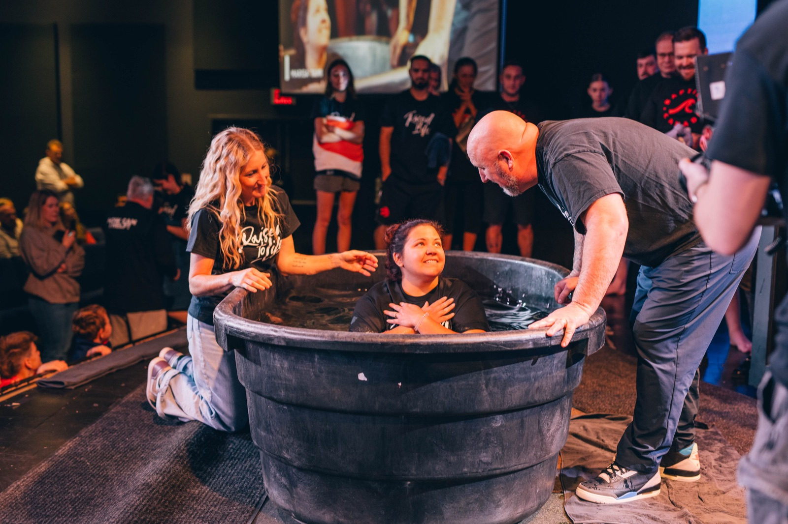
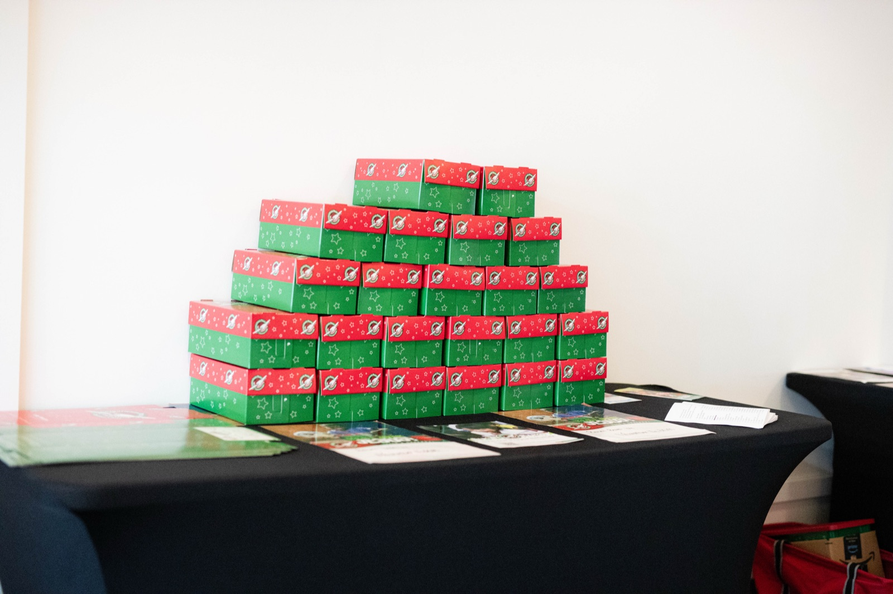
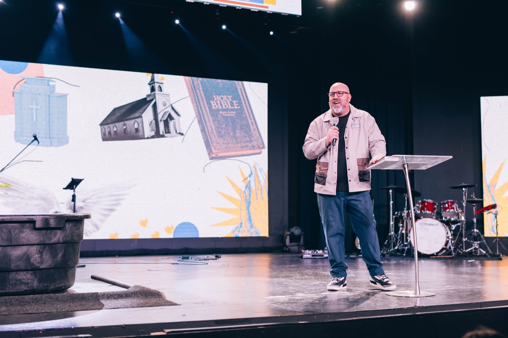

Give Online
Give quickly and securely online. Every gift makes a difference.
Thank you for considering to walk in obedience to God’s command to be a giver!

Text GIVE to
We love each other because he loved us first.
1 John 4:19
10%The tithe is our starting point
At Movement Church, we believe generosity begins with God.
We give because God first gave to us. The tithe is our starting point, returning the first 10 percent to God as an act of faith and worship. We also give offerings as an overflow of gratitude, honouring Him with what He has already provided.
At Movement, giving is not about money. It is about trust, worship, and aligning our hearts with His. We give because God gave first.
Give quickly and securely online. Every gift makes a difference.
You can give in person at any of our locations during an experience.
Text, ‘Give’ to 226-240-1600. Follow the few short prompts and you’re all set.
Email give@wearemovement.ca and note if your gift is for a specific ministry.
Automatically give directly from your bank account on the 1st of each month.
Movement Church is now set up as a vendor/payee at most major banks and credit unions, to donate through bill pay:

When you give at Movement Church, you’re giving to the vision of reaching those who don’t yet know Christ. Every dollar helps create opportunities for people to encounter the hope, love, and truth of Jesus. Your generosity fuels ministry that leads the lost home.
When you give at Movement Church, you’re investing in the next generation. Your generosity directly impacts kids, middle schoolers, and youth through our Movement Kids, Movement Middle School, and Movement Youth programs—helping them grow in faith, build lasting friendships, and discover their purpose in Christ.

80+ people fed twice a week
When you give to Movement, you help meet real needs and change lives. Locally, your generosity feeds over 80 people twice a week through the soup kitchen, supports those who are unhoused, cares for those facing mental health challenges and disabilities, and invests in at-risk youth, your giving rescues women and children in Kampala, Uganda, provides food for kids in developing nations, and brings hope to families in war-torn Ukraine. Every gift makes a lasting difference by extending the love of Jesus near and far.

22 church plants across Canada
When you give to Movement, you are helping spread the gospel through church planting. We are a church that believes in multiplying the Kingdom and long to see a thriving church in every community, reaching people with the message of Jesus. So far, your generosity has helped us plant, resource, and train leaders for 22 church plants across Canada. Beyond our borders, we have also partnered in planting churches in Italy, Ukraine, and France. Every gift fuels the mission of seeing new communities come alive with the hope of Christ.
We will always honour your gifts with faithful stewardship, ethical practices, and transparency so that Movement Church remains beyond reproach.
To ensure full transparency and accountability, our financial statements are reviewed through an independent third-party audit.
You can give online through our secure giving platform, in person during a Sunday service, or by e-transfer to give@wearemovement.ca. You can also mail a check to: 65 Lansdowne Ave, Woodstock, ON N4T 1S8
Yes! If you’d like your gift to go toward a specific ministry (e.g., Kids, Middle School, Youth, Missions, Outreach), simply include a note in your e-transfer or select the appropriate fund when giving online.
Absolutely. We use a trusted and encrypted platform to ensure your financial information is protected and handled securely.
Yes. All eligible donations receive an annual tax receipt early in the new year. Be sure we have your current contact information so we can send it to you.
Yes. Online giving allows you to set up automatic recurring donations—weekly, bi-weekly, or monthly—so you can give consistently and conveniently.
You can log into your giving account online at any time to update your payment method, adjust the amount, or cancel a recurring gift. If you have any issues you can email give@wearemovement.ca
Yes. Anonymous giving is available in person or by mail. For online giving, an account is required to process your donation and issue a tax receipt.
Yes. We operate with transparency and integrity, with financial oversight from church leadership and external accounting support to ensure proper stewardship.
Yes. Our online platform accepts international cards. However, tax receipts are issued under Canadian charitable law.
No problem. Just contact us at give@wearemovement.ca, and we can help resolve any errors quickly.
Give quickly and securely online. Every gift makes a difference.